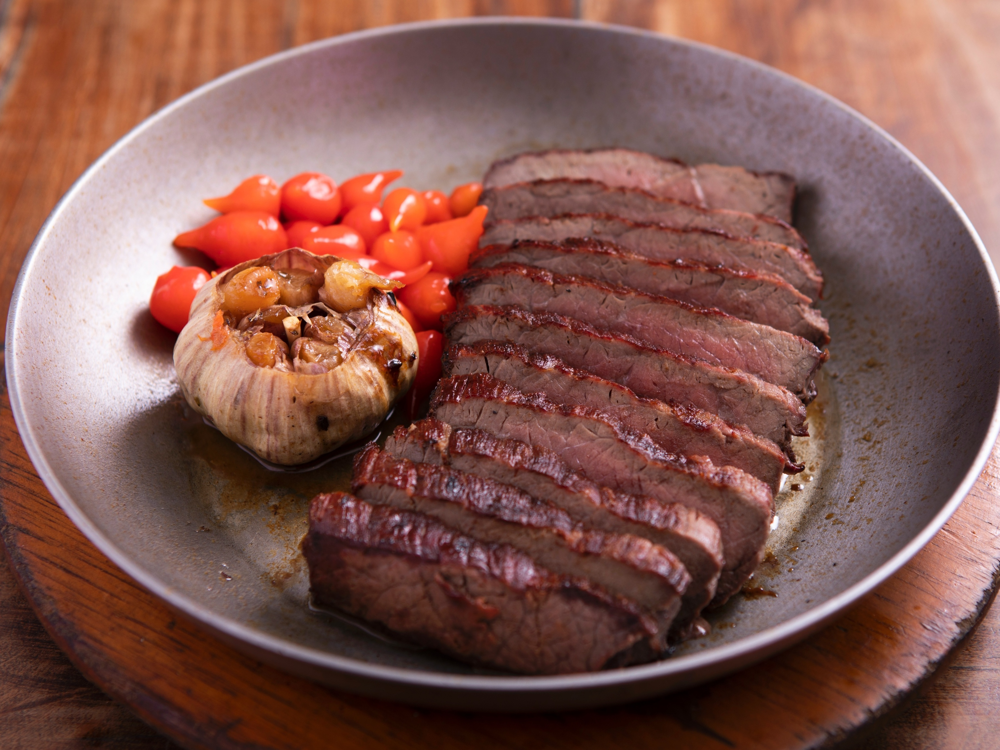

Carne de Sol

Descrição
Originária da culinária nordestina, a carne de sol é carne bovina salgada e seca ao sol. Servida cozida ou grelhada, destaca-se pela sua textura única e sabor intensamente preservado.
ingredientes
- 1 kg de carne de sol
- 2 dentes de alho picados
- 2 dentes de alho picados
- Pimenta-do-reino a gosto
- Coentro e cebolinha a gosto (opcional)
- Azeite de oliva para regar
Etapas
-
Preparação da Carne:
- Deixe a carne de sol de molho em água por aproximadamente 24 horas, trocando a água algumas vezes para dessalgar.
- Após dessalgar, corte a carne em pedaços médios.
-
Tempero da Carne:
- Tempere os pedaços de carne com alho picado, pimenta-do-reino, coentro e cebolinha a gosto. Deixe marinar por pelo menos 30 minutos.
-
Grelhamento:
- Pré-aqueça a churrasqueira ou uma grelha.
- Grelhe a carne temperada até que fique dourada e cozida por dentro. Regue com azeite de oliva durante o processo para manter a suculência.
-
Finalização:
- Sirva a carne de sol grelhada acompanhada de arroz branco, feijão verde, mandioca cozida ou outros acompanhamentos típicos.